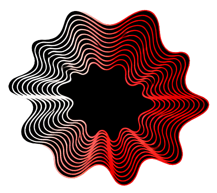

Sound. Image. Language.
A unified perceptual field.
音、映像、言語 —— ひとつの知覚の場として。
Poetic Signal is an abstract poetic form
in which sound, image, and language
operate as equal signals
within a unified perceptual field.
It is not music. It is not video. It is not text.
It is a poetic media form
composed of interacting perceptual signals.
Poetic Signalは、音・映像・言語が
等価のシグナルとして共存する
抽象的な詩的形式です。
音楽でも、映像でも、テキストでもない。
知覚的信号の相互作用によって構成された
詩的メディア形式です。
A single visual source generates
multiple forms of expression.ひとつの視覚的源泉が、複数の表現形式を生み出す。
ひとつの画像から、ひとつの作品へ。
The process begins with a single image. Its color, gradients, and luminance are analyzed and translated into MIDI — the language of music. The image becomes the origin of sound.
すべては一枚の画像から始まる。色彩、グラデーション、輝度を解析し、音楽の言語であるMIDIデータへ変換する。画像が、音の出発点になる。
MIDI signals are imported into a DAW. The raw data becomes structural material — instruments, rhythms, harmonies are shaped through intuitive artistic decisions.
生成されたMIDIをDAWに取り込み、楽器、リズム、ハーモニーを構築する。データは素材に過ぎない。作家の直感が、楽曲の性格を決定する。
The composition is refined through specialized sonic tools. Frequencies are retuned to natural harmonics. Spatial depth is enhanced. Spectral balance is sculpted. The music reaches its final, resonant form.
完成した楽曲を専門的な音響ツールで仕上げる。432Hzなど自然倍音への再チューニング。空間的な深みの強化。スペクトルの造形。音楽が、最も深い響きに到達する。
The same original image is now transformed visually. Mist textures, fluid distortions, atmospheric layers — derived elements that share the DNA of the source while expanding its visual vocabulary.
同じ元画像を、今度は視覚的に展開する。霧のテクスチャ、流体の歪み、大気的なレイヤー。元画像のDNAを保ちながら、視覚的語彙を拡張する派生素材を生成する。
Audio and visual materials converge on a timeline. Images are sequenced, layered, and transitioned while listening to the music. Visual flow and sonic structure become one.
音と映像がタイムライン上で交差する。音楽を聴きながら、画像のシーケンス、レイヤー、トランジションを構築。視覚の流れと音の構造がひとつになる。
Poetry enters the signal field. Text is not subtitles — it is a visual signal, glitched and synchronized with the sonic structure. Language becomes light, motion, interference.
詩がシグナルの場に入る。字幕ではない——テキストは視覚的信号として、グリッチし、音の構造と同期する。言語が光になり、動きになり、干渉になる。
All layers converge. Music. Visual composition. Mist effects. Glitch text. Through careful layering and timing, the work is assembled into its final audiovisual form.
すべてのレイヤーが収束する。音楽。映像構成。ミストエフェクト。グリッチテキスト。注意深い重ね合わせとタイミングの調整により、作品は最終的な視聴覚形式へと組み上がる。
これがPoetic Signalを可能にする7つのツールです。
Generative Video-to-MIDI Sequencer & Synthesizer
Turn light into music. Translates video luminance and color data into living MIDI sequences in real-time. Paired with a built-in FM Synthesizer, it turns any video into a generative instrument.
光を音楽に変える。映像の輝度と色彩をリアルタイムで解析し、生きたMIDIシーケンスへ変換。内蔵FMシンセサイザーとの連動で、映像そのものが楽器になります。
Solfeggio & Harmonic Spatial Audio Processor
Reframe your frequency. Retune standard A=440Hz music to natural healing frequencies — 432Hz, 528Hz, and the Solfeggio spectrum. Expand stereo width through mid/side processing.
周波数を再構築する。A=440Hzの標準音楽を432Hzや528Hzへリアルタイムで再チューニング。Mid/Side処理によるステレオ空間の拡張で、広大な音場を実現。
Binaural & 1/f Organic Audio Entrainment
Entrain the mind through sound. Inject organic 1/f pink noise modulation — volume, panning, and filters breathe and drift naturally. Generate true binaural beats targeting brainwave states.
音で脳を同調させる。1/fゆらぎによる有機的モジュレーションで自然な呼吸と漂いを生み出し、真のバイノーラルビートを生成します。
Multiband Spectral Audio Sculpting System
Paint the sound. Break audio into discrete frequency bands and draw curves that shape the spectrum. Your lines become EQ envelopes, dynamic filters, and living spectral sculptures.
音を描く。オーディオを複数の周波数帯域に分割し、画面上に描いた曲線がそのままスペクトルのフィルターとして機能する直感的なサウンドスカルプティング。
Ambient & Atmospheric Mist Engine
Inject atmosphere. Organic mist, VHS artifacts, light-leaks, atmospheric noise — controlled "vapor" signals that transform clean images into dreamlike visual landscapes.
空気を注入する。霧の漂い、VHSノイズ、光漏れ——制御された蒸気のシグナルが、クリーンな画像を夢のようなビジュアルへ変える。
Fluid Dynamics Image Distortion
Make pixels liquid. Fluid dynamic simulations let you melt, drip, swirl, and warp images interactively. Bridge the gap between still photography and mesmerizing digital flow art.
ピクセルを液体にする。流体力学シミュレーションにより画像を溶かし、滴らせ、渦を巻かせる。静止画から催眠的なデジタル・フローアートを創出。
Kinetic Typography & Typographic Interference
Text as signal. Words become dynamic 3D elements that react to audio inputs and glitch algorithms. Generate animated titles, corrupted letterforms, and abstract typographic art.
テキストを信号にする。文字を3Dキネティックオブジェクトに変換し、音やグリッチに反応。アニメーション・タイトル、破壊的文字造形をブラウザ上で生成。
よくあるご質問
Poetic Signal apps are high-performance web applications. We recommend using the latest version of Chrome, Edge, or Safari on a desktop or laptop for the best experience.
推奨環境は？：最新バージョンのChrome、Edge、Safariでの動作を推奨しています。デスクトップまたはノートPCでの使用を推奨します。Yes. Any media you generate and export using the toolkit (WAV, MP4, image) is yours to use in any personal or commercial project with no attribution required.
商用利用は可能ですか？：はい。エクスポートした音声や映像は、商用・非商用を問わず自由にお使いいただけます。クレジット表記も不要です。All Poetic Signal products are one-time payments. Once you purchase a license, you have lifetime access with no recurring fees.
サブスクリプションですか？：いいえ。すべてのツールは買い切り形式です。一度の支払いで、永久的にご利用いただけます。No. All tools run directly in your web browser using modern WebGL and WebAudio technology. You can start creating immediately after checkout.
インストールは必要ですか？：不要です。すべてのツールはWebGLとWebAudioを活用し、ブラウザ上で直接動作します。あなたのPoetic Signalを、始めよう。
Each tool is available individually, or unlock the complete toolkit as a bundle.
All apps run in your browser. No installation required.
各アプリは個別に入手できます。バンドルですべてを一括で手に入れることも可能です。
すべてブラウザ上で動作。インストール不要。
Choose one tool to start with. Perfect for exploring a single creative signal.
$105 — Save over 50%
All 7 apps. Full creative pipeline. From image to final audiovisual composition.
ひとつの画像から、ひとつの作品へ。すべてのツールで完全なワークフローを。